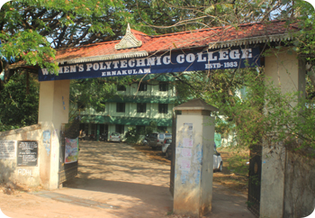

Welcome to Womens Polytechnic College Kalamassery
Government Women’s polytechnic college is the only women’s Polytechnic college in Ernakulam district, It was established in 1983 with the vision to empower women. Started with Just two branches, college now offers four programs in various diploma streams.
- College is functioning at the heart of Kalamssery Town which is the prominent education hub in Ernakulam district. Located at the meeting point of Seaport-airport road and NH 47, college helps in easy commute of students from all parts of the district.
- These organizations contribute a lot in the overall development of the students and in enhancing unity and social awareness among them.
- The College has been maintaining a very good academic record over the years obtaining top grade point in the various disciplines.
The Placement cell of the college also has been functioning well, giving placement to the most of the students in India and Abroad.